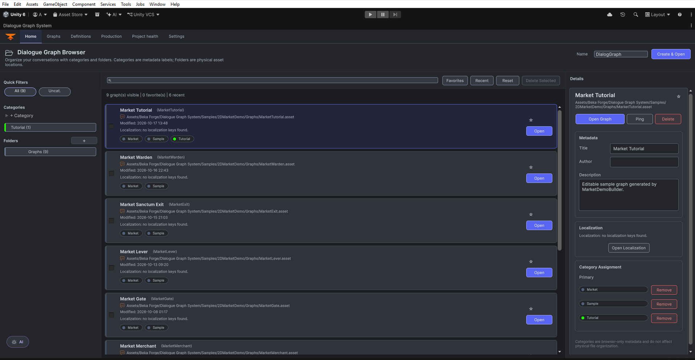

Graph Editor
The active Graphs workspace is where you create, open, connect, and save a conversation. Nodes and their links are stored in the DialogGraph asset.
Key files
DialogSystemMainWindow.cs(active entry point)DialogGraphLauncherWindow.cs(obsolete compatibility wrapper)DialogSystemMainWindowandGraphTabController(active workspace)DialogGraphEditorWindow.cs(legacy editor)DialogGraphView.csView/Elements/Nodes/*DialogGraphLayoutFormatter.csDialogUndoUtility.cs
Authoring entry point
Open Tools > Beka Forge > Dialogue Graph System > Open Editor, then select Graphs. Choose a graph from the browser or open a new graph. The current workspaces are Home, Graphs, Definitions, Production, Project Health, and Settings. Definitions groups Characters, Actions, Variables, and Context; Production groups Localization, import/export, and the production tracker.
How graph assets are stored
The graph asset owns the serialized nodes, boundary markers, and directed links. The canvas is an editor view of that asset; use the graph asset as the saved source of truth and the DGS save/Undo commands for edits.
Graph sidebar and shared definitions
The active editor groups graph authoring, reusable definitions, production tools, Project Health, and settings into workspaces. The graph toolbar shows Save, Format Layout, and Show/Hide Sidebar.
- Characters — keep speaker identity and character bindings consistent across dialog nodes.
- Actions — maintain reusable action definitions and their stable IDs before using those IDs in action nodes.
- Graph context — the graph stores its linked scene context and environment references. Use Definitions to create and manage those shared assets.
- Variables — use Definitions to define typed values that condition and variable-mutation nodes can read or write.
- Sound — the Sound Sequencer integration adds a docked graph/node sound panel when available. See Set up Walla sound.
Save, layout, and graph validation
The graph toolbar provides Save, Format Layout, and Show/Hide Sidebar. Format Layout changes node positions; it does not repair graph data. To validate an open graph, show its sidebar, select Validate, then click Validate Graph. The editor saves the active graph, runs validation, and displays its errors, warnings, and information messages in that sidebar.
View-state persistence
The editor remembers graph view preferences such as pan, zoom, and sidebar state as editor view settings; they do not change the serialized conversation flow.
GraphView responsibilities
- zooming, dragging, and selection
- grid and minimap
- context-menu node creation
- graph save/load synchronization
- boundary markers and the authored node/link model
- undo-aware structural changes and save/load synchronization
- dialog, choice, condition, action, variable, branch and graph-transfer nodes, with optional camera and presentation integrations
Browse the Node Reference for one preview and field guide per node kind, including its input/output semantics.
Common mistakes
- assuming that a visually connected port proves runtime behavior; review each route in the graph canvas
- reusing an action or variable ID without checking the corresponding definition
- treating canvas positions or selection as conversation logic; the saved graph asset and its links define execution
Current editor screenshots
